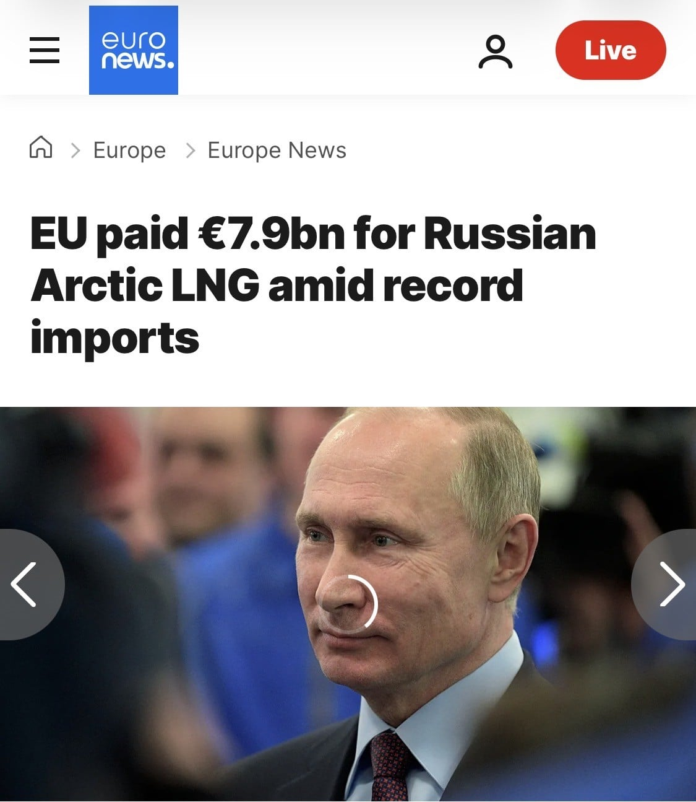

https://www.euronews.com/2026/10/09/eu-paid-79bn-for-russian-arctic-lng-amid-record-imports
EU는 밝혀진 것만 올해 1~9월 까지 러시아산 가스를 무려 79억 유로(약 88억 달러) 어치 1218만톤 구입함.
이미 단기수입금지 조치는 4월에 발효 되었으나 9월까지도 수입이 된 정황이 드러남.
EU는 지들편 패는 놈한테 돈 주고 물건 사고 있음.

https://www.euronews.com/2026/10/09/eu-paid-79bn-for-russian-arctic-lng-amid-record-imports
EU는 밝혀진 것만 올해 1~9월 까지 러시아산 가스를 무려 79억 유로(약 88억 달러) 어치 1218만톤 구입함.
이미 단기수입금지 조치는 4월에 발효 되었으나 9월까지도 수입이 된 정황이 드러남.
EU는 지들편 패는 놈한테 돈 주고 물건 사고 있음.
시장 정보 업체 Kpler의 실시간 데이터에 따르면, 올해 1월 1일부터 9월 5일까지 유럽 항구들이 야말의 전 세계 총 수출량 중 88.9%를 처리했으며, 이는 2025년의 78.2%에서 증가한 수치다.
Kpler의 에너지 분석가 찰스 코스터루스는 유로뉴스와의 인터뷰에서 “이는 EU 구매자들이 2027년 1월 발효될 수입 금지 조치를 앞두고 수입을 최대한 늘리고 있다는 신호다. 단기 계약을 통한 LNG 수입은 올해 4월부터 금지되었기 때문에, 이 물량의 대부분은 기존 장기 계약에서 비롯된 것”이라고 말했다.
골-든 정답
댓글들 우크라 전쟁전까지 잘 알지도 못하는 나라였으면서 한우관계 엄청신경쓰네 ㅋㅋ 한우나 먹어라
우크라이나는 역사속으로 사라져야;
젤렌스키는 푸틴 정액변기가 맞다
알빠노 ㅗ
이미 우크라이나는 전쟁이 끝나면 유럽 최빈민국 되는건 확정임. 이미 20~30대들 대부분은 다른 나라로 이민가서 인구유출 심한 상황이고, 종전되면 남은건 참전용사들하고 노약자들밖에 없는데다가, 농토도 이미 미국이랑 EU가 원조 대가로 나눠가진지 오래라서 사실상 국제원조를 받지 않는 이상 자립이 불가능한 구조임.
근데 이미 국제외교 다 파탄내놨는데 어느 나라가 우크라이나를 도우려고 하겠음
임마들 숨겨둔 핵무기라도 있음??
유럽 미국 다 사는데 우크라 너네가 뭔데 우리가 그렇게나 신경써야 되냐. 이제까지 사실 남이었잖아
변명할필요도없음
알기로 내년 1월부터 진짜 수입 금지라 그 전까지 수입하는거라더라 ㅋㅋㅋㅋㅋㅋㅋㅋㅋㅋㅋㅋㅋㅋㅋ